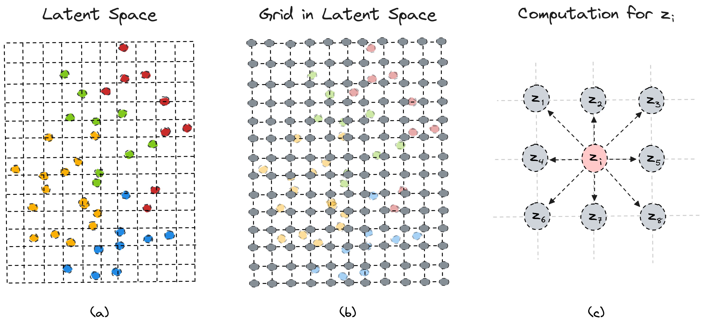

Conditional Postural Synergies I: Representations
In this series of posts, I will discuss the key projects I developed for my Ph.D. thesis. The main theme of my research is the application of postural synergy models to facilitate the control of humanoid robotic hands. In this initial post, I will focus on the representation and generation of grasp postures and demonstrate some example applications. But, let me first explain what postural synergies are and their significance in this context.
Background#
The human hand is the primary mechanism we use to interact with the world,
enabling essential functions like tool usage and communication, forming the
foundation of our civilization
(Kivell et al. 2016).
Naturally, the robotics community has tried to replicate these capabilities
by designing anthropomorphic robotic hands. However, the dexterity and
versatility of these hands come at the price of increased complexity in control
(Venkataraman et al. 2016),
owing to their high number of degrees of freedom (DoFs) - the human hand, for
instance, has 21 DoFs. To address the challenge of controlling humanoid hands
effectively, roboticists have sought to imitate the mechanisms employed by the
brain to tame such a high number of DoFs. Research in primate neurophysiology has
suggested that the brain utilizes synergies at various levels - neural, muscular,
and kinematic - to facilitate hand control
(Santello et al. 2016).
The core concept behind synergistic control is that multiple DoFs
are controlled by a small number of control variables, which implies a certain
degree of interdependence among the DoFs.
The robotics community has developed two main approaches to imitate this organizational structure
(Salvietti 2016):
(1) a hardware approach, where the synergies are
implemented directly on the robot's physical hardware, for example by
coupling tendons in the robot’s fingers, and (2) a software approach in
which the synergistic framework is implemented through a computational
method. The software approach is more modular, non-invasive, and allows the
robot to maintain a large number of degrees of freedom. It usually employs
a manifold learning method to learn a low-dimensional representation
of the hand configuration space, which is commonly referred to as the
synergy space. In practice, the objective is to find: (1) a function
$E: \mathcal{Q} \rightarrow \mathcal{Z}$ that encodes a hand posture
$q\in \mathcal{R}^{d_q}$,
represented for example by the finger joint angles, into a low-dimensional
point $z\in \mathcal{R}^{d_z}$ where $d_z \ll d_x$, and (2) a function
$D:\mathcal{Z}
\rightarrow \mathcal{Q}$ that decodes the low-dimensional point $z$ into
a hand posture $q$.
Models and Evaluation#
Several methods have been proposed for extracting the synergy space of robotics
hands.
In one of the first works
(Ciocarlie et al. 2007),
the method utilized was the
Principal Component Analysis (PCA),
which is a linear and deterministic method. PCA represents the map $z=E(q)$
through a matrix operation: $E(q) = qW$ where $W \in \mathbb{R}^{d_q \times d_z}$.
The optimal solution can be analytically derived, with the optimal value for W
corresponding to the principal components of the data. This solution also minimizes
the total squared reconstruction error of the data.
In another work
(Starke et al. 2018), an
Auto-Encoder (AE) model was employed, which is a deterministic but
non-linear method.
In this case, the maps $E(q)$ and $D(q)$
are modeled using neural network architectures. The network parameters are
optimized by minimizing the mean squared error between the input and the
reconstructed output.
Finally, the Gaussian Process Latent Variable
Model (GP-LVM), which is a probabilistic non-linear method has been used
in multiple cases
(Romero et al. 2013,
Xu et al. 2016). Here,
the mapping E is modeled by a Gaussian Process, making the encoding
procedure a sampling operation from a Gaussian distribution. The
model is optimized by maximizing the likelihood of the data.
In previous studies proposing new synergy extraction models, the evaluation
of the model's performance commonly relies on the reconstruction
(or reproduction) error. This metric measures the distance between the
original hand posture and its reconstructed counterpart, which is
assumed to reflect the ability of the model
to represent the observed hand postures. However, in the case of
non-linear models, for a posture q encoded in a latent point
$z = E(q)$, there exists a neighboring latent point $z^*$, such that the
decoded posture $\tilde{q}^* = D(z^*)$ from this point is closer to the
original posture $q$ compared to the posture $\tilde{q} = D(z)$ decoded
from the original latent point z. More specifically:
$$|| \tilde{q}^* − q||_2 < ||\tilde{q} − q||_2$$
This suggests that a model may have a large reconstruction error for a
particular hand posture while still being able to represent it in another
region of the latent space. This discrepancy is
observed in all non-linear models, while PCA does not exhibit this
property. The likely reason behind this is that in PCA we can find
a globally optimal solution, whereas in the non-linear models, we find
only locally optimal solutions since we use gradient-based methods.
Furthermore, we generally develop a synergy model to use it in downstream
tasks. However, this metric fails to provide any relevant information
regarding the synergy model’s performance in the downstream tasks.
We advocate that the evaluation metric should be closely aligned with
the specific task at hand.
Considering this, we proposed
(Dimou et al. 2021,
Dimou et al. 2023)
employing the smoothness of the
learned latent space as an alternative evaluation metric for
comparing synergy models. Smoothness quantifies the degree of
variation in hand postures decoded from adjacent points in
the latent space. For instance, if we want to generate a manipulation
trajectory, e.g. using a sampling-based motion planner, directly
in the latent space to solve an in-hand manipulation task, we
would want neighboring points to produce similar grasp postures
without exhibiting abrupt changes in joint angles between them.
To approximate the smoothness of a latent space we compute the
average smoothness in the neighborhood of each latent point.
We begin by encoding all grasp postures that are contained in
our dataset into the latent space, we then compute the bounding
box of these latent points and define a Cartesian grid inside it.
For each vertex $z_i$ on the grid, we compute the difference of
the joint angles between the grasp posture $q_i = D(z_i)$,
which is decoded from $z_i$ , and the grasp postures $q_j = D(z_j)$,
decoded from the vertices $z_j$ which are the adjacent vertices
of $z_i$. The smoothness of the latent point $z_i$ is then
defined as:
$$ \mathbf{s}_i = \frac{\sum_{j=1}^{8}d_{ij}}{8} \text{, where } d_{ij} = || D(z_i) - D(z_j) ||_2$$

Finally, we define the smoothness of the entire latent space
as the average smoothness of the latent points on the grid:
$$ \mathbf{S} = \frac{\sum_{i=1}^{N} \mathbf{s}_{i}}{N} $$
where N is the number of vertices on the grid and measures the
resolution of the grid and can be arbitrarily defined. Moreover,
to quantify how smoothness changes in each point’s neighborhood
we compute the variance $v_i = Var (d_{ij})$ and the entire
variance of the latent space $V = Var (s_i)$. We consider
the smoothness $s_i$ as a discretized gradient of the latent
point $z_i$, indicating the average difference
in joint angles when transitioning to the surrounding points on the grid.
Conditional Postural Synergies#
Based on the previous discussion, we propose to utilize a different type
of model for synergy extraction, namely the
Variational Auto-Encoder
(VAE).
VAEs are generative models and are regularly used as a
representation learning module in various applications including
robotics. Notably, VAEs have demonstrated the ability to learn smoother
and more meaningful latent spaces compared to AEs
(Chen et al. 2021).
They are composed of an encoder and a decoder network which model model probability
distributions. The encoder is an inference model that takes as input a
data point $q$ and infers a latent point $z$. In practice, the encoder is
parameterized by a neural network and produces the mean $\mu \in \mathbb
{R}^{d_z}$ and variance $\sigma \in \mathbb{R}^{d_z}$ of a Gaussian
distribution. The latent point $z$ is then sampled from this Gaussian
distribution, in contrast to the AE model, where the latent point is the
output of the encoder network. The decoder model, which is also
parameterized by a neural network, uses a latent point $z$ to generate a
point in the original data space $\mathcal{Q}$. Both networks are trained
jointly using variational inference, maximize the evidence lower bound
(ELBO):
$$\mathcal{L}_{\boldsymbol{\theta}, \boldsymbol{\phi}}(\mathbf{x}) =
\mathbb{E}_{q_{\boldsymbol{\phi}}(\mathbf{z} | \mathbf{x})} \left[\log
p_{\boldsymbol{\theta}}(\mathbf{x} | \mathbf{z})\right] - D_{KL} \left(
q_{\boldsymbol{\phi}}(\mathbf{z} | \mathbf{x}) \| p(\mathbf{z} )\right)$$
The first term corresponds to the mean squared error between the the input
and reconstruction, while the second term plays a regularization role in
the generative model. The optimization of the network's parameters is
performed with gradient-based algorithms.
To gain an intuitive understanding of the impact of latent space
smoothness, we can decode the grasp postures from the grid vertices and
visually examine them. Displayed below are hand postures of the Shadow hand
decoded from a $5\times5$ grid in the latent space of a PCA, VAE, and GP-LVM model. The
visualization indicates that the VAE model has learned a smooth latent
space, as neighboring hand postures show consistent variations. In
contrast, the neighboring postures decoded from the GP-LVM model exhibit
irregular changes, indicating less smoothness in the latent space.
Additionally, one of the advantages of using VAEs to model the synergy space is that it can be easily extended to generate data explicitly conditioned on discrete and continuous variables. This means that we can model high-level properties, such as the grip type, and quantities, such as the grasp size, using one model. This way we can explicitly generate grasps that have specific desired properties. The high-level information can be the type of grasp that is performed, e.g. from a grasp category, the size of the grasp, or information about the object that is grasped. This can be useful in several applications where a high-level policy (or planner) generates the high-level information and dictates the goals to a low-level controller.
The Conditional Variational Auto-Encoder (CVAE) conditions the encoder and the decoder networks on an auxiliary variable $c$. In the case of training the CVAE to generate grasp postures these conditional variables can represent the desired properties of the grasp. For example, in the Figure below you can see six grasp postures decoded from a CVAE model using the Shadow hand, that each belongs to a different precision grasp type.

Another grasp property that we might want to regulate is the grasp size. Below are the grasp postures decoded from the model for a tripod grasp with increasing sizes. In the context of precision grasps, we define the grasp size as the distance between the thumb and index fingertips.


Case Study: In-hand Regrasping#
In order to assess the proposed model and evaluation metric in the context
of a manipulation task utilizing synergies, we selected an in-hand
regrasping task, in which we will be generating the regrasp trajectories
directly in the latent space of the model. The objective of the regrasping
task is to transition from an initial grasp posture, belonging to one
specific grasp type, to a target grasp posture, belonging to another grasp
type, while maintaining the stability of the object in the hand.
We follow a straightforward approach for generating the regrasp
trajectories in the latent space of the models. We encode the initial
grasp posture $q_{initial}$ and the target grasp posture $q_{target}$ into
the latent space, resulting in the respective latent points $z_
{initial}$ and $z_{target}$. Subsequently, we perform linear interpolation
between these two points in Euclidean space, sampling $N$ points to
represent the trajectory steps, where $N$ corresponds to the desired
number of steps in the trajectory. Finally, we decode the sampled latent
points into grasp postures $q_1, q_2,.. ,q_N$, obtaining a trajectory in
the configuration space. In essence, instead of employing a complex
planning algorithm to find a sequence of states that can perform the
required regrasp we rely on the structure of the latent space of the
model. If the latent space is smooth enough we can generate successful
trajectories by a simple procedure such as linear interpolation.

In our work, we demonstrate that the models with lower reconstruction errors do not perform well in the regrasping task. Conversely, models with smoother latent spaces manage to perform more successful regrsaps. This indicates that the smoothness of the latent space is a more predictive metric for the performance of the model in the regrasping task, highlighting the importance of choosing an evaluation metric based on the nature of the downstream task to be executed. Below, is depicted a series of regrasps generated by our CVAE model and executed in a real-world setting with the iCub robot.
Conclusion#
In conclusion, we argue that the evaluation metric used to compare different synergy models should be chosen based on the downstream task that we want to execute. To this end, we have introduced the smoothness of the latent space as an evaluation metric and empirically shown its impact on an in-hand regrasping task. We also proposed the CVAE model as an alternative model for synergy extraction and showed that it can generate grasp postures based on high-level grasp properties. In future work, it would be nice to explore more intelligent methods for generating trajectories in the latent space. For instance, by leveraging the smoothness of the neighborhood within the latent space, or using metrics proposed for other generative models such as the curvature of the latent space.
References#
[1] Kivell et al. "The Evolution of the Primate Hand: Anatomical, Developmental, Functional, and Paleontological Evidence" Springer, 2016.[2] Venkataraman et al. "Dextrous Robot Hands" Springer, 1990.
[3] Santello et al. "Hand synergies: Integration of robotics and neuroscience for understanding the control of biological and artificial hands" Physics of Life Reviews, 2016.
[4] Salvietti "Replicating Human Hand Synergies Onto Robotic Hands: A Review on Software and Hardware Strategies" Frontiers in Neurorobotics, 2018.
[5] Ciocarlie et al. "Dimensionality reduction for hand-independent dexterous robotic grasping," IROS, 2007.
[6] Starke et al. "Synergy-Based, Data-Driven Generation of Object-Specific Grasps for Anthropomorphic Hands" Humanoids, 2018.
[7] Romero et al. "Extracting postural synergies for robotic grasping" IEEE Transactions on Robotics, 2013.
[8] Xu et al. “A Comparative Study for Postural Synergy Synthesis Using Linear and Nonlinear Methods.” Humanoid Robotics, 2016.
[9] Dimou et al. "Learning Conditional Postural Synergies for Dexterous Hands: A Generative Approach Based on Variational Auto-Encoders and Conditioned on Object Size and Category" ICRA, 2021.
[10] Dimou et al. "Robotic hand synergies for in-hand regrasping driven by object information" Autonomous Robots, 2023.
[11] Chen et al. “Dynamic movement primitives in latent space of time-dependent variational autoencoders.” Humanoids, 2016.